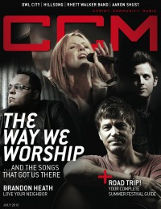

CCM Digital, Jul 2012
| Cover |
|---|
|  |
 Online Exclusively Online Exclusively |
| Writers in this Issue |
| Argyrakis, Andy Aspinwall, Grace S. Assad, Audrey Conner, Matt Durbin, Emily Greer, Andrew Jackson, Tom Jamison, Joshua Lusk, Caroline Siler, Steve Tasker, Nathan |
Worship Music
Cover Feature:- "The Way We Worship... and the songs that brought us here" by Caroline Lusk
- "Roots: The artists that shaped the industry prove a classic never dies" by Caroline LuskThe Choir, Twila Paris, CCM Classic Radio
- "Road Trip!" by Caroline Lusksummer music festivals with listing
- "Good Times in the Summertime" by Caroline Lusk
Worship:
- "Foundational Worship" by Emily Durbin
- "Lead the Flock... Don't Leave Them" by Joshua Jamison
- "Risen Today"Aaron Shust & Charles Wesley
- Joanne Cash by Matt Conner
- Anthony Evans by Andrew Greer
- Jenny & Tyler by Matt Conner
- Children 18:3 by Andy Argyrakis
- "Love Your Neighbor" by Caroline Lusk
- House of Heroes by Andy Argyrakis
- Canopy Red by Andy Argyrakis
- "Make Room" by Steve Siler
- "Joe Kane & Kenny Davis"
Reviews & New Releases:
- Tim Hughes - Ultimate Collection by Andrew Greer
- Karen Davis - Songs in the Night by Grace S. Aspinwall
- Heather Clark - Overcome by Andrew Greer
- Cheri Keaggy - So I Can Tell by Grace S. Aspinwall
- Rhett Walker Band - Come to the River by Matt Conner
- Bellarive - The Heartbeat by Grace S. Aspinwall
- Children 18:3 - On the Run by Matt Conner
- House of Heroes - Cold Hard Want by Andy Argyrakis
- The Overseer - We Search, We Dig by Matt Conner
- Wolves at the Gate - Captors by Matt Conner
- The Rocket Summer - Life Will Write The Words by Andy Argyrakis
- Canopy Red - Wake Up by Andy Argyrakis
- Rhema Soul - Red by Grace S. Aspinwall
- Regina Belle - Higher by Andrew Greer
- The Washington Projects - Space, Time, Continuum by Andy Argyrakis
- Byron Cage - Memoirs of a Worshipper by Andrew Greer
- P.O.D. - Murdered Love by Matt Conner
- Willie Nelson - Heroes by Andy Argyrakis
- Peter Gabriel - Live Blood by Andy Argyrakis
- "Vice Verses Tour, North Central College, Naperville, IL" by Andy Argyrakis
- Doug Van Pelt(editor) - Rock Stars On God, Volume 2
- "Driftwood" by Thomas Nelson
- "An Adventure Awaits..." by Nathan Tasker
- "Seeing The Music" by Tom Jackson
Relevant Links
For more information about CCM Digital visit .This issue is available exclusively online.
© 2011 CMnexus. Last updated September 2019. Contact: editor -AT- cmnexus -DØT- org About